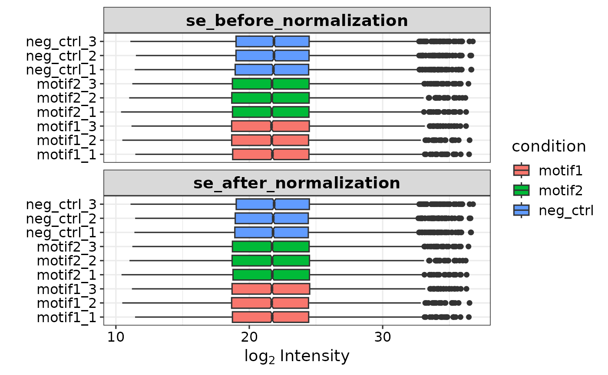

create volcano plots for all comparisons present in the results file
Source:R/plots.R
plotVolcano.Rdcreate volcano plots for all comparisons present in the results file
Usage
plotVolcano(
res,
pval_cutoff = 0.05,
fc_cutoff = 1,
label = "sig",
top_n = NULL,
up_color = "red3",
down_color = "dodgerblue",
ns_color = "grey70",
specify_imputed = T
)Arguments
- res
A data frame with results from get_DEPresults()
- pval_cutoff
The p.adj significance cutoff
- fc_cutoff
The log2 fold change significance cutoff
- label
Specifies which points to label. The default is 'sig', labeling all significant points. Entering a value for top_n limits the labeling to the top_n up- and top_n down-regulated proteins based on the p.adj. When providing a vector with protein names, only those points are labeled.
- top_n
Specifies how many significant points to label.
- up_color
Specifies the color of the significantly up-regulated proteins.
- down_color
Specifies the color of the significantly down-regulated proteins.
- ns_color
Specifies the color of non-significant proteins.
- specify_imputed
Boolean specifying whether proteins with imputed values need to be indicated with open circles, versus closed circles for complete cases.
Examples
library(ggplot2)
library(ggrepel)
se <- prepare_se(report.pg_matrix, expDesign)

#> Imputing along margin 2 (samples/columns).
#> [1] 0.3066195
#> Imputing along margin 1 (features/rows).
#> Warning: 36 rows with more than 50 % entries missing;
#> mean imputation used for these rows
#> Cluster size 5574 broken into 3662 1912
#> Cluster size 3662 broken into 1462 2200
#> Done cluster 1462
#> Cluster size 2200 broken into 1110 1090
#> Done cluster 1110
#> Done cluster 1090
#> Done cluster 2200
#> Done cluster 3662
#> Cluster size 1912 broken into 1379 533
#> Done cluster 1379
#> Done cluster 533
#> Done cluster 1912
res <- get_DEPresults(se, type = 'all')
#> Tested contrasts: neg_ctrl_vs_motif1, neg_ctrl_vs_motif2, motif1_vs_motif2
vol <- plotVolcano(res, top_n = 10) # Labels the top 10 upregulated and
# top10 downregulated proteins based on fdr.
vol <- plotVolcano(res, label = c('SMAD3', 'SMAD4')) # Only labels SMAD3/4
vol <- plotVolcano(res, up_color = 'green', down_color = 'yellow') #
# Gives a very ugly volcano plot